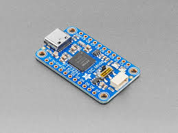
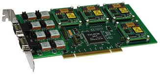
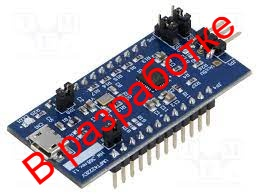

#Projects

Оценочная плата FT232H USB 2.0 для параллельного и последовательного интерфейса

TA1-PCI4. Модуль IBM PC/AT с 4 резервированными мультиплексными каналами по ГОСТ Р 52070-2003 (MIL-STD-1553B)

UMFT4222EV — это модуль разработки, в котором используется FT4222H от FTDI, высокоскоростной мост USB2.0 — QuadSPI/I2C в компактном 32-контактном корпусе QFN.
Плагин для FT232H
Плагин для FT4222